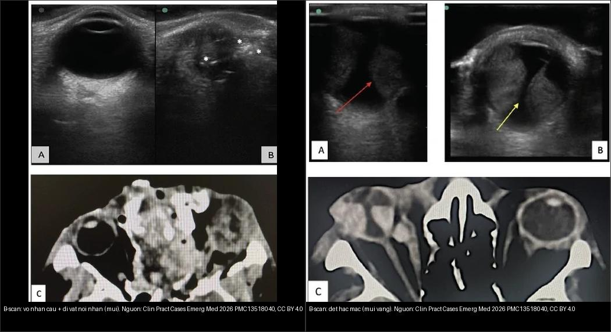
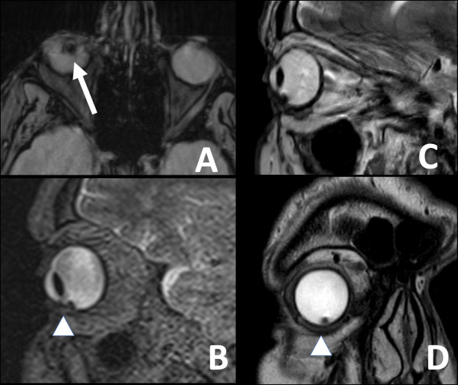
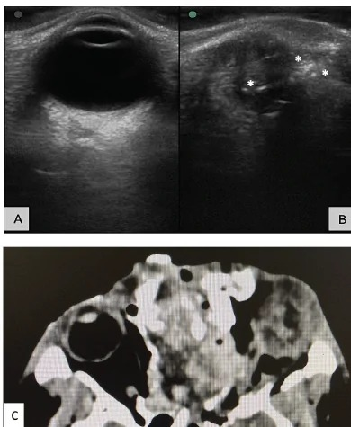
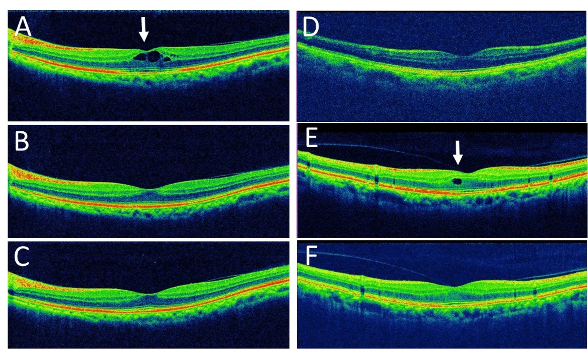

401 — Phương thức CĐHA mắt: CT/MRI/siêu âm/OCT / Eye imaging modalities
Tags: pattern:protocol-mat vung:mat protocol:CT-1mm protocol:MRI-hoc-mat protocol:sieu-am-B-scan protocol:OCT
Mức chắc chắn (certainty): tổng hợp y văn (literature synthesis) — nhóm tự biên từ y văn mở (BMC Ophthalmol 2025 PMC12220044; Clin Pract Cases Emerg Med 2026 PMC13518040; BMC Ophthalmol 2024 PMC11346195; Cureus 2026 PMC13588649), số liệu lấy nguyên từ bài gốc.
1. Tổng quan — chọn đúng vũ khí đầu tiên (TẠI SAO)
- Câu hỏi quyết định: tổn thương thuộc xương (vỡ), mô mềm/đỉnh hốc mắt (u/viêm/TK thị), trong nhãn cầu mà không soi được (máu/bong), hay võng mạc–hoàng điểm ở mức micron (DME/AMD/glaucoma)? Chọn theo câu hỏi, không theo thói quen.
- CT lát mỏng ≤ 1 mm + MPR: xương (vỡ), vôi hóa (retinoblastoma – RB), dị vật kim loại (hyperdense + tua streaking) — nhanh, cấp cứu. TẠI SAO tránh CT ở trẻ nghi RB: đột biến RB1 + tia X → nguy cơ u thứ phát; MRI tìm luôn vôi hóa bằng GRE + lan theo thần kinh thị.
- MRI (T1/T2 fat-sat + cản quang + GRE/SWI + DWI): cơ (Graves/TED), TK thị, u, giao thoa nón trong (intraconal) vs ngoài nón (extraconal) — chuẩn mô mềm, không tia X. TẠI SAO phải fat-sat: mỡ hốc mắt rất sáng trên T1/T2 → fat-sat làm nổi mô mềm/quá trình viêm.
- Siêu âm B-scan 10 MHz: trong nhãn cầu cấp cứu (bong võng mạc / xuất huyết dịch kính / u hắc mạc) khi môi trường mờ — cấm đè khi nghi vỡ nhãn cầu (globe rupture).
- OCT (chụp cắt lớp quang học): võng mạc–hoàng điểm (bản đồ thickness, DRIL, EZ) + glaucoma (RNFL/GCC) — phân giải micron, không thay CT/MRI hốc mắt.
- Nguyên tắc bất biến: mỗi phương thức trả lời một loại câu hỏi; kết quả âm tính trên một phương thức không loại trừ tổn thương nhỏ (ví dụ dị vật kim loại nhỏ mà CT/siêu âm bỏ sót — xem Ca 3 & mục 5).
 CT ≤ 1 mm: phân loại tổn thương trong vỡ nhãn cầu (bất thường củng mạc, lệch thủy tinh thể…). Nguồn: BMC Ophthalmol 2025 (PMC12220044), CC BY-NC-ND 4.0. Giữ nguyên bản.
CT ≤ 1 mm: phân loại tổn thương trong vỡ nhãn cầu (bất thường củng mạc, lệch thủy tinh thể…). Nguồn: BMC Ophthalmol 2025 (PMC12220044), CC BY-NC-ND 4.0. Giữ nguyên bản.
2. Gamut chỉ định theo câu hỏi
- Chấn thương ± nghi vỡ/dị vật: CT ≤ 1 mm + MPR (kim loại sáng, gỗ tối giả khí — phải hỏi vật liệu dị vật); siêu âm chỉ sau khi loại trừ vỡ.
- Lồi mắt / viêm / u / đỉnh hốc mắt: MRI fat-sat + cản quang (định vị trong–ngoài nón, TK thị, xoang hang).
- Mờ mắt đột ngột mà không soi được đáy mắt: B-scan — tìm bong võng mạc, xuất huyết dịch kính, xuất huyết hắc mạc, u.
- Đái tháo đường / AMD / glaucoma: OCT — phù hoàng điểm (CST, DRIL), drusen/CNV, RNFL/GCC.
- Tăng nhãn áp / nghi u giàu mạch: siêu âm + OCT/OCE, đôi khi CTA/MRA cho mạch máu.
3. Bảng chọn phương thức
| Câu hỏi lâm sàng | Vũ khí đầu tay | Thông số | Cấm/kỵ |
|---|---|---|---|
| Vỡ sàn/hốc mắt & dị vật | CT ≤ 1 mm + MPR | Xương + mô mềm, coronal/sagittal | Trẻ nghi RB → MRI; MRI nếu nghi dị vật kim loại |
| Cơ/TK thị/u/đỉnh hốc mắt | MRI fat-sat + cản quang | T1/T2 FS + GRE + DWI | Máy tạo nhịp; an thần trẻ |
| Bong/XH trong nhãn cầu | B-scan 10 MHz | V/Y, aftermovement, T-sign | Cấm đè khi nghi vỡ |
| Hoàng điểm/glaucoma | OCT | CST, DRIL/EZ, RNFL/GCC | Không thay CT/MRI hốc mắt |

B-scan (kỹ thuật "bể nước"): vỡ nhãn cầu + dị vật nội nhãn (trái) vs bong hắc mạc (phải). Nguồn: Clin Pract Cases Emerg Med 2026 (PMC13518040), CC BY 4.0. Ảnh ghép letterbox.4. Protocol tóm tắt
- CT hốc mắt: 0,625–1 mm, xương + mô mềm, MPR coronal/sagittal; cản quang khi u/viêm/mạch. TẠI SAO ≤ 1 mm: dị vật kim loại và vỡ xương nhỏ chỉ lộ trên lát mỏng + đa bình diện.
- MRI hốc mắt: cuộn bề mặt, lát 2–3 mm, fat-sat 2 bình diện + cản quang (T1 FS sau tiêm) + GRE/SWI; DWI khi u/viêm. TẠI SAO T1 fat-sat sau tiêm là bắt buộc: phân biệt viêm/u (ngấm) với mỡ/tổn thương cũ.
- B-scan 10 MHz: cấu trúc đầu dò, tránh đè; đánh giá V/Y, aftermovement, T-sign (xem 411).
- OCT: hoàng điểm (bản đồ ETDRS) + RNFL/GCC cho glaucoma/TK thị (xem 441/442).
5. Biến thể bình thường và cạm bẫy
- Dị vật gỗ trên CT tối giả khí — có thể bị đọc thành "khí"; luôn hỏi vật liệu và chụp thêm MRI nếu cần.
- Dị vật kim loại nhỏ có thể lọt CT lẫn siêu âm. Ca nguyên văn (PMC11346195): siêu âm không thấy dị vật, CT 1–2 mm cũng không thấy, nhưng MRI GRE lộ giả ảnh dị từ (susceptibility artifact) do dị vật kim loại gây siderosis — bệnh nhân rối loạn thị lực tiến triển. Cạm bẫy kép: (a) đừng kết luận "không dị vật" chỉ vì CT/SA âm tính; (b) MRI CHỐNG CHỈ ĐỊNH khi đã biết/nghi dị vật kim loại sắt từ (ferromagnetic) — trong ca này MRI được chỉ định vì CT/SA âm tính mà vẫn nghi siderosis; nếu biết trước có kim loại thì không chụp MRI.
- Thuốc cản quang + suy thận/dị ứng — bù nước + hỏi tiền sử; ưu tiên MRI/không cản quang khi được.
- An thần trẻ chụp MRI — nhịn ăn + theo dõi, hẹn giờ; tránh chụp lặp không cần thiết (ALARA).
- Không dùng siêu âm đè khi nghi vỡ; không đặt bệnh nhân nghi dị vật kim loại vào máy MRI.
6. Tự lượng giá — Blind Quiz
Ca 1 — Trẻ leukocoria nghi RB: CT hay MRI đầu? Vì sao?

- Gợi ý: trẻ nhỏ, đồng tử trắng, chưa loại trừ u nguyên bào võng mạc.
- Câu hỏi: Chọn phương thức đầu tiên? Vì sao tránh CT?
Bấm để hiện đáp án (findings + chẩn đoán)
- MRI (tránh CT): RB1 + tia X = nguy cơ u thứ phát; MRI GRE tìm vôi hóa + lan theo thần kinh thị. (Nhớ: đây là lý do khác với ca MRI dị vật kim loại ở Ca 3 — bối cảnh quyết định.)
- Nguồn ảnh: BMC Ophthalmol 2024 (PMC11346195), CC BY-NC-ND 4.0 — minh họa giả ảnh dị từ MRI GRE, không phải ca retinoblastoma.
Ca 2 — Chấn thương mắt mờ đột ngột + nghi vỡ: B-scan ngay hay CT trước?

- Gợi ý: sau chấn thương vật lý, mắt mờ, không soi được đáy mắt.
- Câu hỏi: Làm gì trước? B-scan có được đè không?
Bấm để hiện đáp án (findings + chẩn đoán)
- CT trước để loại trừ vỡ/dị vật; KHÔNG đè B-scan — đè có thể làm thoát tổ chức nội nhãn qua vết vỡ. Khi đã loại vỡ (hoặc dùng kỹ thuật bể nước không đè), B-scan cho thấy dị vật nội nhãn dạng echo sáng / bong hắc mạc.
- Nguồn ảnh: Clin Pract Cases Emerg Med 2026 (PMC13518040), CC BY 4.0.
Ca 3 — Rối loạn thị lực tiến triển, tiền sử chấn thương; siêu âm và CT đều không thấy dị vật. Bước tiếp theo?
- Gợi ý: nghi siderosis bulbi (dị vật kim loại lưu lại lâu ngày), môi trường mờ.
- Câu hỏi: Vì sao CT/SA âm tính vẫn có dị vật? Cảnh báo gì khi dùng MRI?
Bấm để hiện đáp án (findings + chẩn đoán)
- Findings: MRI GRE cho giả ảnh dị từ (susceptibility artifact) ở phần dưới nhãn cầu phải = dị vật kim loại nhỏ mà siêu âm và CT 1–2 mm bỏ sót; mô bệnh/thị lực cải thiện sau lấy dị vật.
- Chốt: kích thước dị vật nhỏ có thể lọt cả CT lẫn siêu âm → giữ nghi ngờ cao; MRI chỉ dùng khi CT/SA âm tính (như ca này); nếu đã biết/nghi kim loại sắt từ thì KHÔNG chụp MRI (nguy cơ di chuyển/nóng tổn thương).
- Nguồn ảnh: BMC Ophthalmol 2024 (PMC11346195), CC BY-NC-ND 4.0 (giữ nguyên bản).
Ca 4 — Bệnh nhân theo dõi sau đục thủy tinh thể, giảm thị lực; soi thấy bình thường. Dùng gì để đánh giá hoàng điểm?

- Gợi ý: mờ nhẹ sau mổ, không đau.
- Câu hỏi: Phương thức nào cho chẩn đoán? Dấu hiệu trên OCT gợi ý gì?
Bấm để hiện đáp án (findings + chẩn đoán)
- OCT hoàng điểm: thấy nang dịch nội võng mạc (macular cysts) — phù hoàng điểm giả thủy tinh thể (Irvine-Gass); OCT phân giải micron nên phát hiện sớm hơn soi đáy mắt. Không dùng CT/MRI cho câu hỏi hoàng điểm.
- Nguồn ảnh: Cureus 2026 (PMC13588649), CC BY 4.0 (nhóm ca CME giả thủy tinh thể).
Bài liên quan chéo
- 400 – Tổng quan Mắt
- 411 – Siêu âm nhãn cầu
- 410 – Giải phẫu hốc mắt
- 421 – Lồi mắt Graves
- 441 – OCT hoàng điểm
- 442 – Glaucoma (RNFL/GCC)
- 449 – Chấn thương mắt & IOFB
Ảnh
- Tên file:
401_slug_Modality_SourceID.jpg. Nguồn + giấy phép (license) từng ảnh trongimages/CREDITS.md. - Ảnh CC BY-NC-ND (PMC12220044, PMC11346195) giữ nguyên bản, không crop/ghép.
- AuntMinnie (Case of the Day): chỉ dẫn link, không tải.
Không dùng để chẩn đoán độc lập khi chưa có người hướng dẫn.